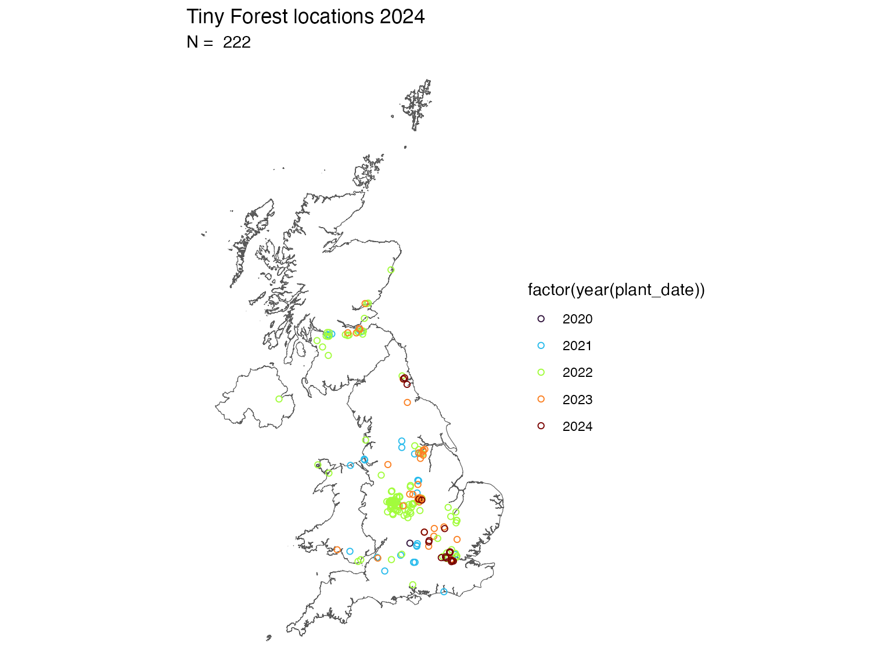
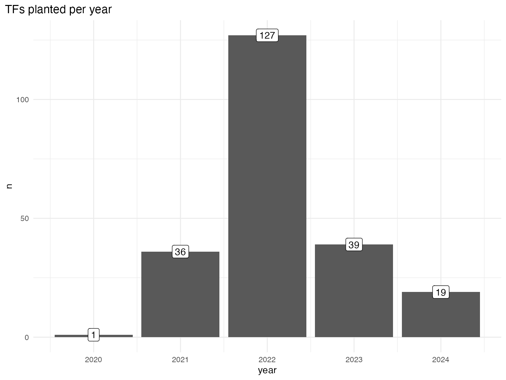
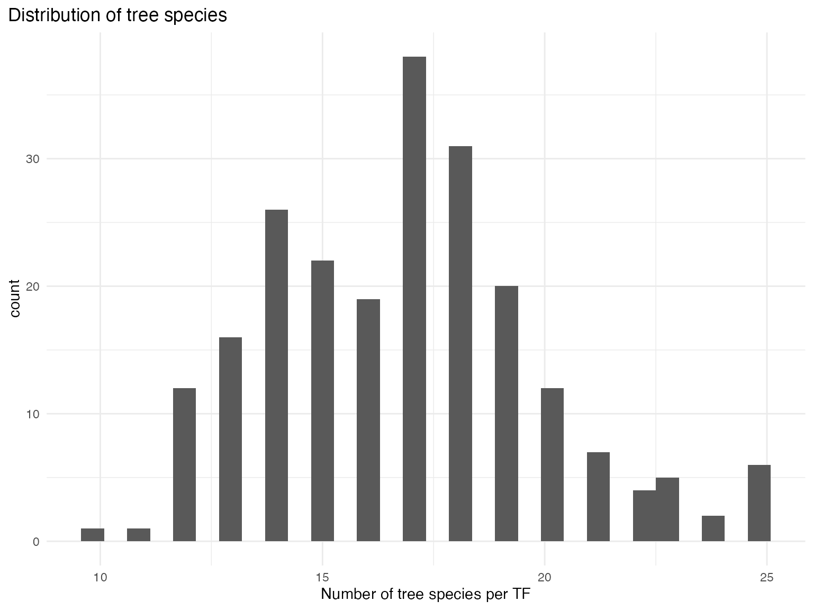
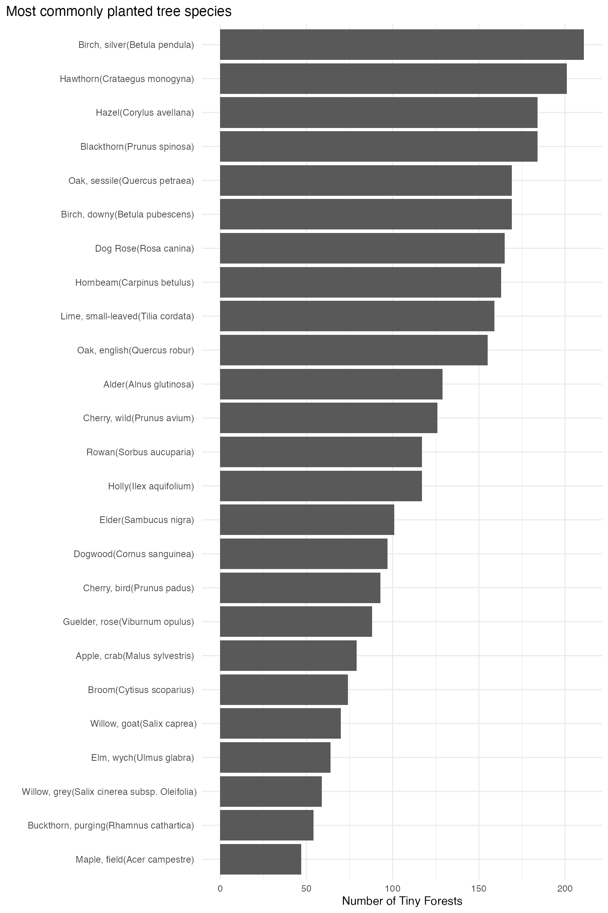
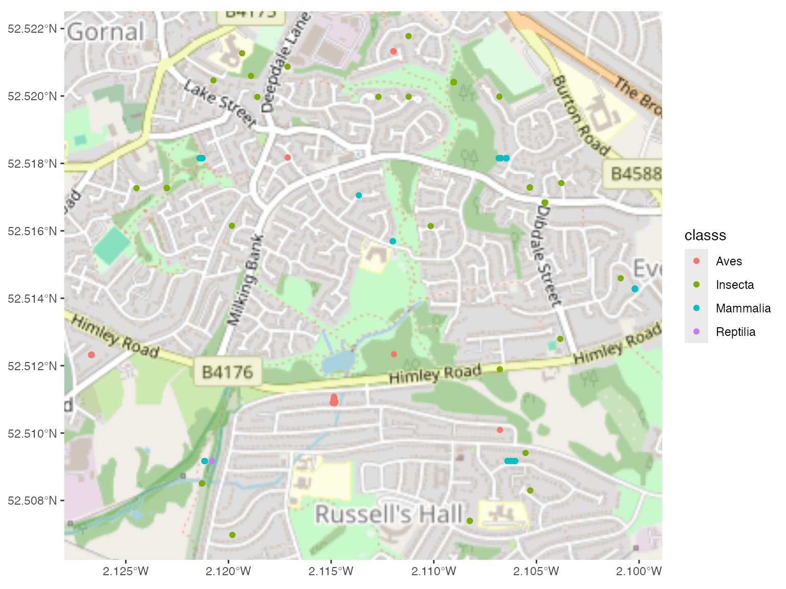
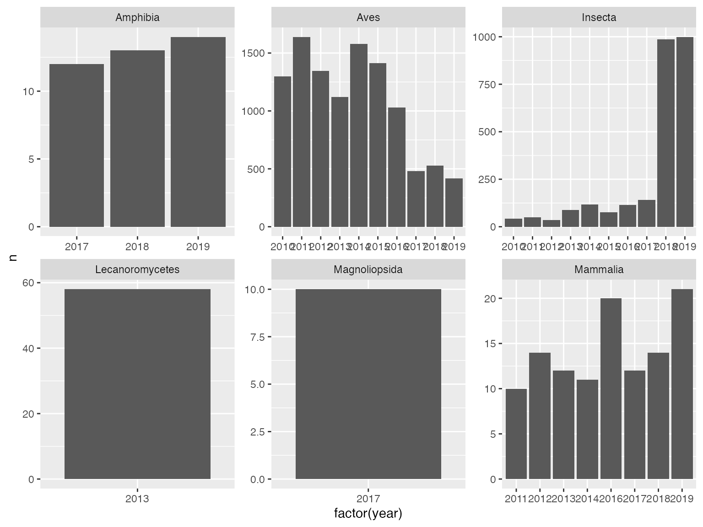
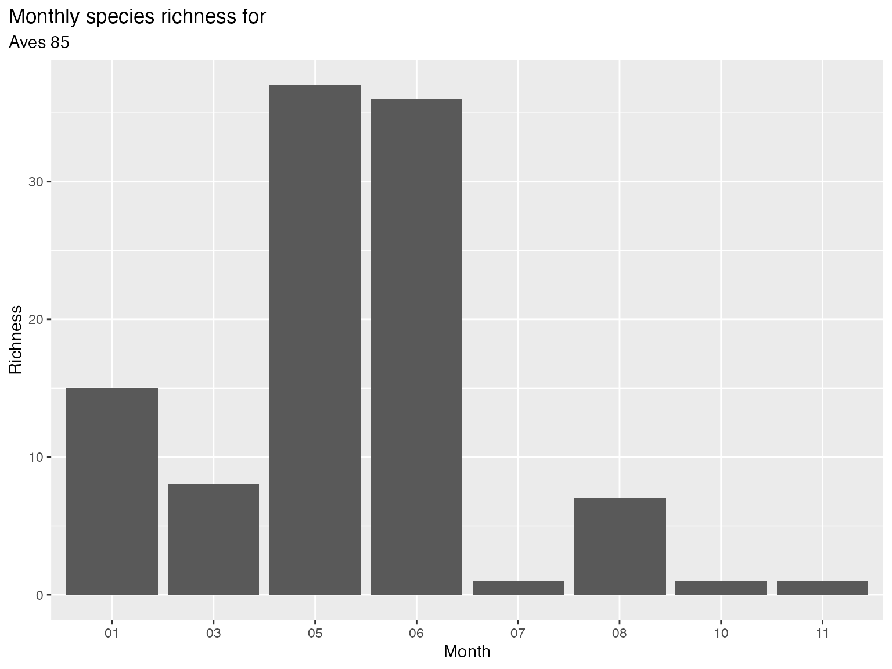

How to use the `tinyfoRest` package
using-tinyfoRest.RmdWhat is the tinyfoRest package?
The aim of tinyfoRest is to provide set of tools
designed to extract, manipulate and analyse data relevant to the
location of Tiny Forests in the UK.
Specifically it extracts and processes landcover and biodiversity data from a range of sources for a given area around Tiny Forest locations, and provides a set of tools for analysing citizen science data derived directly from Tiny Forests.
Tiny Forests are small scale dense native tree plantings usually in urban areas - and are managed by Earthwatch. https://earthwatch.org.uk/get-involved/tiny-forest
Getting started
The package is hosted on Github and is a work in progress. It can be
installed by running
devtools::install_github("julianflowers/tiy-forest/tinyfoRest").
It loads another Github package myScrapers which is needed
to download data from the Tiny Forest website.
The package makes use of a number of Application Programming Interfaces (APIs) some of which require API keys which will need to be applied for separately. This is outlined in the relevant sections of this vignette.
It uses a range of Python packages to access some datasets (in some
cases Python packages are better developed than R). For this reason the
first step is to run initialise_tf() to intialise the
package.
This:
Loads the
reticulatepackage which R uses to talk to PythonSets up a Python virtual environment (VE) called
tinyforest, and ensures R uses the correct version of Python by specifying theRETICULATE_PYTHONenvironment variable. It may be necessary to restart R to make sure R correctly uses this.You will be asked if you want to remove the
tinyforestenvironment. Say “no” unless you have a previous installation and are having trouble. It will create a clean install of the VE.-
Installs a number of Python packages to the
tinyforestenvironment. These includeearthengine-apiwhich enables access to Google Earth Engine (GEE)geemap- a set of added value tools to extract and manipulate GEE dataosdatahub- access to Ordnance Survey National Geographic Database data.OSGridConverter- converts lat-longs to UK Grid referenceseemont- calculates a range of vegetation indices from Sentinel2 satellite images
Imports the relevant modules for use in other packages
Install and initialise
First install and load the package.
if(!require("tinyfoRest"))
devtools::install_github("julianflowers/tiny-forest/tinyfoRest", force = FALSE)
devtools::install_github("julianflowers/myScrapers")
needs(tinyfoRest, sf, myScrapers, rvest)Then initialise tinyfoRest
initialise_tf()
#> virtualenv: tinyforest
#> Using virtual environment 'tinyforest' ...Load Tiny Forest data
The next step is to load Tiny Forest (TF) data. Because this only
exists in a series of web pages the get_tf_data function
identifies the relevant pages and iterates over them to extract name,
id, location, area, planters, and types of tree planted (as a list
column), for those TFs planted at the time of extraction. It does
include TFs planted outside the UK. The function takes about 120 seconds
to iterate over all the relevant pages.
get_tf_data does 4 things:
extracts a data frame Tiny Forest names and IDs
extracts a data frame of additional TF details (tree species, areas and locations)
extracts and
sf(spatial) data frame of UK data locationsproduces an interactive map of TF locations
tf_data <- get_tf_data()
#> 166.997 sec elapsedProducing a simple map is as simple as loading
tf_data$map.
tf_data$mapOr we can draw a more sophisticated static map using
tf_data$tidy_tf_sf.
## load UK boundary files
uk <- read_sf("https://services1.arcgis.com/ESMARspQHYMw9BZ9/arcgis/rest/services/Countries_December_2022_UK_BGC/FeatureServer/0/query?outFields=*&where=1%3D1&f=geojson")
## create map
ggplot() +
geom_sf(data = uk, fill = "white") +
geom_sf(data = tf_data$tidy_tf_sf, pch = 1, aes(colour = factor(year(plant_date)))) +
labs(title = "Tiny Forest locations 2024",
subtitle = paste("N = ", nrow(tf_data$tidy_tf_sf))) +
theme_void() +
scale_colour_viridis_d(option = "turbo")
It is simple to draw time series plots…
df <- tf_data$tidy_tf_sf
df |>
count(year = year(plant_date)) |>
ggplot() +
geom_col(aes(year, n)) +
geom_label(aes(year, n, label = n)) +
labs(title = "TFs planted per year") +
theme_minimal() +
theme(plot.title.position = "plot")
Once the data is loaded we can save it as a csv file and get some high level information on planting, timings, size and so on.
needs(patchwork)
## annual planting
tf_trees <- df |>
mutate(trees_1 = str_split(trees, "\\|")) |>
select(-trees) |>
unnest("trees_1") |>
mutate(trees_1 = str_remove(trees_1, "\nExport Tags"))
tf_trees$trees_1 |>
unique()
#> [1] "Apple, crab(Malus sylvestris) "
#> [2] " Birch, downy(Betula pubescens) "
#> [3] " Birch, silver(Betula pendula) "
#> [4] " Blackthorn(Prunus spinosa) "
#> [5] " Dogwood(Cornus sanguinea) "
#> [6] " Elder(Sambucus nigra) "
#> [7] " Guelder, rose(Viburnum opulus) "
#> [8] " Hazel(Corylus avellana) "
#> [9] " Maple, field(Acer campestre) "
#> [10] " Oak, english(Quercus robur) "
#> [11] " Oak, sessile(Quercus petraea) "
#> [12] " Willow, goat(Salix caprea)"
#> [13] "Alder(Alnus glutinosa) "
#> [14] " Apple, crab(Malus sylvestris) "
#> [15] " Cherry, bird(Prunus padus) "
#> [16] " Cherry, wild(Prunus avium) "
#> [17] " Common privet(Ligustrum vulgare) "
#> [18] " Elm, wych(Ulmus glabra) "
#> [19] " Hawthorn(Crataegus monogyna) "
#> [20] " Hornbeam(Carpinus betulus) "
#> [21] " Lime, large-leaved(Tilia platyphyllos) "
#> [22] " Lime, small-leaved(Tilia cordata) "
#> [23] " Rowan(Sorbus aucuparia) "
#> [24] " Spindle(Euonymus europaea) "
#> [25] " Wild service tree(Sorbus torminalis)"
#> [26] " Alder buckthorn(Frangula alnus) "
#> [27] " Dog Rose(Rosa canina) "
#> [28] " Poplar, black(Poplus nigra) "
#> [29] " Wild service tree(Sorbus torminalis) "
#> [30] " Beech, common(Fagus sylvatica) "
#> [31] " Wayfaring tree(Viburnum lantana) "
#> [32] " Whitebeam(Sorbus aria) "
#> [33] " Broom(Cytisus scoparius) "
#> [34] " Gorse(Ulex europaeus) "
#> [35] " Heather(Calluna vulgaris) "
#> [36] " Holly(Ilex aquifolium) "
#> [37] " Pine, scots(Pinus sylvestris)"
#> [38] "Alder buckthorn(Frangula alnus) "
#> [39] " Willow, goat(Salix caprea) "
#> [40] " Willow, grey(Salix cinerea subsp. Oleifolia)"
#> [41] "Beech, common(Fagus sylvatica) "
#> [42] " Bilberry(Vaccinium myrtillus) "
#> [43] " Juniper(Juniperus communis) "
#> [44] " Pine, scots(Pinus sylvestris) "
#> [45] " Rowan(Sorbus aucuparia)"
#> [46] " Whitebeam(Sorbus aria)"
#> [47] " Spindle(Euonymus europaea)"
#> [48] "Bilberry(Vaccinium myrtillus) "
#> [49] " Alder, grey(Alnus incana) "
#> [50] " Ash(Fraxinus excelsior) "
#> [51] " Elm, english(Ulmus procera) "
#> [52] " Willow, common osier(Salix viminalis)"
#> [53] " Oak, sessile(Quercus petraea)"
#> [54] " Buckthorn, purging(Rhamnus cathartica) "
#> [55] " Pear, common(Pyrus communis) "
#> [56] " Aspen(Populus tremula) "
#> [57] " Wayfaring tree(Viburnum lantana)"
#> [58] "Birch, downy(Betula pubescens) "
#> [59] " Oak, english(Quercus robur)"
#> [60] "Aspen(Populus tremula) "
#> [61] "Alder, grey(Alnus incana) "
#> [62] " Alder, red(Alnus rubra) "
#> [63] "Alder, red(Alnus rubra) "
#> [64] " Hawthorn, midland(Crataegus laevigata) "
#> [65] " Willow, common osier(Salix viminalis) "
#> [66] " Cherry Plum(Prunus cerasifera) "
#> [67] " Sea-buckthorn(Hippophae rhamnoides) "
#> [68] " Wild rasperry(Rubus idaeus) "
#> [69] " Common walnut (Juglans regia) "
#> [70] " Sweet chestnut(Castanea sativa) "
#> [71] " Willow, eared(Salix aurita) "
#> [72] " Box, common(Buxus sempervirens) "
#> [73] "Birch, silver(Betula pendula) "
#> [74] " Service tree, wild(Sorbus torminalis) "
tf_trees |>
group_by(tf_id) |>
summarise(n = n()) |>
ggplot(aes(n)) +
geom_histogram() +
labs(title = "Distribution of tree species",
x = "Number of tree species per TF") +
theme_minimal() +
theme(plot.title.position = "plot")
Tree species
We can also look at planting frequency of different tree species.
tf_trees |>
ungroup() |>
count(trees_1, sort = TRUE) |>
top_n(25, n) |>
ggplot() +
geom_col(aes(n, reorder(trees_1, n))) +
labs(y = "",
title = "Most commonly planted tree species",
x = "Number of Tiny Forests") +
# ggthemes::theme_base() +
theme(plot.title.position = "plot") +
theme_minimal() +
theme(plot.title.position = "plot")
What do TFs look like?
We can also download an image for a TF via Google Maps. This requires an API key which can be obtained from:
https://developers.google.com/maps/documentation/streetview/cloud-setup
library(ggmap);library(magick)
tf_df <- tf_data$tidy_tf
api_key <- Sys.getenv("GOOGLE_MAPS")
image <- get_tf_images(lon = tf_df$lon[100], lat = tf_df$lat[100], key = api_key, zoom = 20, tf_id = tf_df$tf_id[100])
image_read(image)
Biodiversity data
get_nbn_buffer downloads occurrence data from the NBN
Atlas in a set buffer around a given longitude and latitude. For example
we can download 30000 records around (Darlington TF). Note: when
extracting data from APIs it helps to create a “safe” version of your
function especially if you aare making multiple API calls (see below).
This makes sure that your function will keep on running. This is
achieved by using the safely function which stores the
output as a list with 2 variables - result and
error. To get the results we need to extract the
result vector.
## create a safe version of the function
safe_buff <- safely(tinyfoRest::get_nbn_buffer, otherwise = NA_real_)
## extract data
nbn_data <- safe_buff(tf_df$lon[100], tf_df$lat[100], n = 30000, tf_id = tf_df$tf_id[100])
#> 1.604 sec elapsed
## use `result`
nbn_out <- nbn_data$result |>
mutate( tf_id = tf_df$tf_id[100])
needs(ggspatial, prettymapr)
## map
nbn_out |>
filter(year > 2014) |>
st_as_sf(coords = c("decimalLongitude", "decimalLatitude"), crs = 4326) |>
ggplot() +
ggspatial::annotation_map_tile() +
geom_sf(aes(colour = classs)) 
For ecological analyses we need to transform the data from long to
wide format. With an NBN atlas extract we can deploy the
create_species_matrix function which creates a species
matrix and a list of sites or observation ids.
For example we can extract a matrix of all insect observations…
## create a matrix of observations by class and year
spp_matrix <- create_species_matrix(nbn_out, class = "Insecta")
tf_bd_insects <- calc_bd_metrics(df = nbn_out, class = "Insecta")
tf_bd_birds <- calc_bd_metrics(df = nbn_out, class = "Aves")
tf_bd_mammals <- calc_bd_metrics(df = nbn_out, class = "Mammalia")
tf_bd_mammals$metrics
#> month richness N ratio diversity
#> 1 03 1 5 0.2000000 0.0000000
#> 2 04 1 6 0.1666667 0.0000000
#> 3 05 6 10 0.6000000 0.7800000
#> 4 06 5 15 0.3333333 0.7822222
#> 5 08 5 6 0.8333333 0.7777778
#> 6 09 1 4 0.2500000 0.0000000
#> 7 10 1 2 0.5000000 0.0000000
#> 8 <NA> 1 2 0.5000000 0.0000000Scaling up
To compare biodiversity across TF areas we can extract NBN data from
multiple sites using the purrr package. Set
.progress = TRUE to track the time it takes to run. Note:
the NBN atlas API has a 500000 download limit, but it sometimes a bit
temperamental.
## sample tf_ids
##
sample <- sample_n(tf_df, 20)
output <- map(1:nrow(sample), \(x) safe_buff(lon = sample$lon[x], lat = sample$lat[x], tf_id = sample$tf_id[x], n = 30000), .progress = TRUE)
#> 1.744 sec elapsed
#> 14.421 sec elapsed
#> 6.483 sec elapsed
#> 7.756 sec elapsed
#> 4.931 sec elapsed
#> 3.228 sec elapsed
#> 0.872 sec elapsed
#> 6.424 sec elapsed
#> 7.508 sec elapsed
#> 1.537 sec elapsed
#> 4.453 sec elapsed
#> 2.154 sec elapsed
#> 16.363 sec elapsed
#> 2.113 sec elapsed
#> 4.71 sec elapsed
#> 1.627 sec elapsed
#> 8.043 sec elapsed
#> 3.973 sec elapsed
#> 4.82 sec elapsed
#> 0.264 sec elapsed
res <- map(output, "result")
res_1 <- res[which(!is.na(res))]
res_df <- list_rbind(res_1)Explore data
How many observations per site per year?
We have 157294 rows of data for 0 sites.
sites <- res_df[["site"]] |> unique()
res_counts <- res_df |>
filter(between(year, 2010, 2019)) |>
count(site, year)
res_counts |>
ggplot() +
geom_line(aes(year, n, group = site), colour = "grey90") +
geom_line(aes(year, n, group = site), colour = "red", data = res_counts |> filter(site == sites[2])) +
labs( y. = "No of observations",
caption = "Source: NNB API",
x = "Year",
title = "Annual NBN observation counts per TF site",
subtitle = paste0("Site ", res_counts |> filter(site == sites[2]) |> select(site) |> slice(1), " shown as red line")) +
theme_minimal() +
theme(plot.title.position = "plot") +
scale_x_continuous(n.breaks = 10) 
Split by taxa
res_counts_site <- res_df |>
filter(between(year, 2010, 2019),
site == sites[2]) |>
count(site, classs, year) |>
filter(n > 9) |>
ggplot(aes(factor(year), n)) +
geom_col() +
facet_wrap(~ classs, scales = "free") +
scale_x_discrete()
res_counts_site
Explore data
For some taxa alternative data sources may add additional value. For example data from the 2020 Botanic Society of Britain and Ireland survey may give a more complete plant record for each 1km grid square (see below); and eBIrd data may be more upto data for bird observations.
eBIrd data can be obtained by creating and account on the eBIrd website and completing a request form specifying location and requirements. Once approved the data is made available as a download.
Plant diversity using BSBI data
I have also included functions to extract data for the 2020 Botanic Society of Britain and Ireland survey. This is publicly available from for UK National Grid 1k monads. This requires conversion of lat-longs to UK grids.
grid_ref <- os_lat_lon_to_grid(lon = sample$lon[2], lat = sample$lat[2])
#> Using virtual environment 'tinyforest' ...
grid_ref$grid
#> [1] "TQ3487"
bsbi_data <- get_bsbi_data(grid_ref = grid_ref$grid)
bsbi_data <- bsbi_data |>
enframe() |>
unnest("value") |>
unnest("value") |>
mutate(year = str_extract(value, "20\\d{2}"),
value = str_remove(value, year),
count = parse_number(value),
value = str_remove(value, as.character(count)),
value = str_remove(value, "\\d{1,}"),
grid = grid_ref$grid,
tf_id = sample$site[2],
species = str_remove(value, "\\(") ,
species = str_remove(species, "\\)"),
species = str_squish(species)) |>
arrange(value) |>
drop_na()Rapid calculation of biodiversity metrics
The calc_bd_metrics function takes an output from
get_nbn_buffer or get_bsbi_data, converts the
data from long to wide format, creates a species matrix for a specified
class (for get_nbn_buffer data), and outputs a list
containing:
- diversity metrics (Simpson)
- species richness by month (plotted)
- Bray-Curtis matrix
- Raup matrix
metrics <- calc_bd_metrics(df = nbn_data$result, class = "Aves")
metrics$metrics |>
gt::gt()| month | richness | N | ratio | diversity |
|---|---|---|---|---|
| 01 | 15 | 15 | 1.0000000 | 0.9333333 |
| 03 | 8 | 8 | 1.0000000 | 0.8750000 |
| 05 | 37 | 105 | 0.3523810 | 0.9668934 |
| 06 | 36 | 74 | 0.4864865 | 0.9667641 |
| 07 | 1 | 1 | 1.0000000 | 0.0000000 |
| 08 | 7 | 7 | 1.0000000 | 0.8571429 |
| 10 | 1 | 1 | 1.0000000 | 0.0000000 |
| 11 | 1 | 1 | 1.0000000 | 0.0000000 |
metrics$plot +
labs(title = "Monthly species richness for ",
subtitle = paste("Aves", tf_df$site[1]),
y = "Richness",
x = "Month") +
theme(plot.title.position = "plot")
Vegetation indices
The package includes a calc_ndvi_buff function to enable
the calculation of normalized vegetation index (NDVI) for the buffer
area around a given point. It uses Sentinel2 surface reflectance
satellite images which are available at 10m resolution and are regularly
updated. The function extracts images via the Google Earth Engine API
and requires registration and authentication prior to use (see…).
The function returns a list including, image dates, NDVI statistics for the image, an interactive map and a raster. Note it may take few minutes to run.
The code chunk below calculates the NDVI for each image containing the buffer around a TF for 2019 and 2022 and maps them side-by-side. (Note, the function selects only those S2 images with cloud cover < 10%).
plant_date <- sample$plant_date |>
unique()
ee <- import("ee")
geemap <- import("geemap")
ee$Initialize()
i <- 10
after <- get_vegetation_indices(tf_id = sites[i], buffer = 30, lon = sample$lon[i], lat = sample$lat[i], start = as.character(sample$plant_date[i]), end = as.character(today() ))
before <- get_vegetation_indices(tf_id = sites[i], buffer = 30, lon = sample$lon[i], lat = sample$lat[i], end = as.character(sample$plant_date[i]), start = as.character(sample$plant_date[i] - 365))
before$sf |>
ggplot() +
geom_density(aes(GLI)) +
geom_density(aes(GLI), data = after$sf, colour = "green") +
labs(title = paste(sample$plant_date[i], sites[i])) +
theme_minimal()